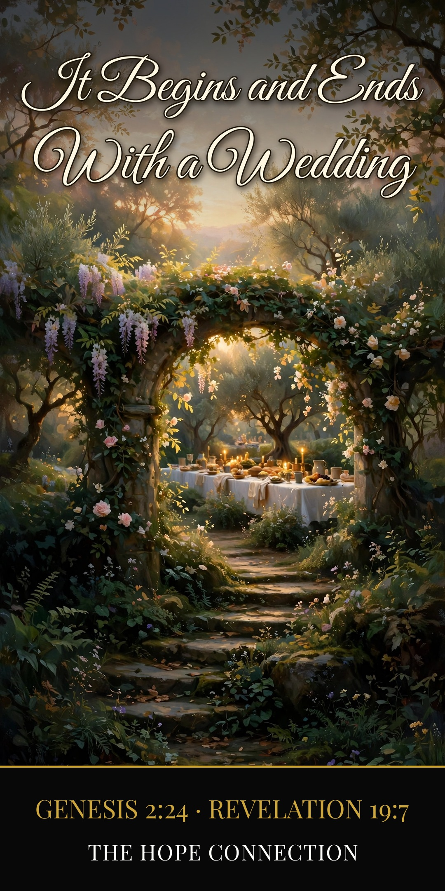

Therefore a man shall leave his father and his mother and hold fast to his wife, and they shall become one flesh.
Genesis 2:24 (ESV)
Open your Bible at the front, and open it at the back. You’ll find the same thing at both ends. At the front: a wedding in a garden. At the back: a wedding in a city. Everything in between is the story of how the Bridegroom got His bride.
The First Wedding
Before there was a church, before there was a nation, before there was sin — there was a wedding. God looked at the only thing in His good creation that wasn’t good yet — “It is not good that the man should be alone” (Genesis 2:18) — and He formed a woman and brought her to the man, like a father walking his daughter down the aisle.
And the first words any human being ever spoke in the Bible? A love song. “This at last is bone of my bones and flesh of my flesh” (Genesis 2:23). Adam didn’t give a lecture. He sang.
“Therefore a man shall leave his father and his mother and hold fast to his wife, and they shall become one flesh” (Genesis 2:24). Naked and not ashamed. Fully known, fully loved, nothing to hide. That’s where the Bible starts: two people, one flesh, and God smiling over the whole thing.
The Picture Almost Ruined
But you know what happened in that garden. Sin walked into the first home, and the first thing it produced was hiding — fig leaves, distance, blame. “The woman whom you gave to be with me...” (Genesis 3:12). The gift became the excuse. And every marriage since has carried that bend: grasping and blaming where there used to be giving and cherishing.
Here’s the bad news, and we might as well say it plain: left to ourselves, we don’t just break our wedding vows. We break faith. We run. If the story depended on brides staying faithful, there would be no story.
The Groom Who Wouldn’t Quit
So God told the story again — this time as the Husband Himself.
He gave the prophet Hosea an unfaithful wife, and then He did the scandalous thing: He went after her. “I will allure her, and bring her into the wilderness, and speak tenderly to her” (Hosea 2:14). And over a bride who had spent everything on other lovers, God spoke vows she had no right to hear: “I will betroth you to me forever. I will betroth you to me in righteousness and in justice, in steadfast love and in mercy. I will betroth you to me in faithfulness. And you shall know the LORD” (Hosea 2:19-20).
Count the “I wills.” She brought the record of her running. He brought everything else. Friend, that’s not just a picture of Israel. That’s a picture of your salvation. The God who married us is the God who pursues us.
And Paul finally tells us why marriage carries all this weight. Quoting Genesis 2:24 about a man and his wife, he says: “This mystery is profound, and I am saying that it refers to Christ and the church” (Ephesians 5:32). Marriage was never only about marriage. From Eden onward, it was a living sermon — and the sermon is about a Groom who “loved the church and gave himself up for her” (Ephesians 5:25).
There’s the gospel, wearing wedding clothes: the Bridegroom pays the bride price in His own blood, goes to His Father’s house to prepare a place (John 14:2-3), and comes back for His bride.
The Last Wedding
Which is why the Bible ends the way it began — only bigger.
“Let us rejoice and exult and give him the glory, for the marriage of the Lamb has come, and his Bride has made herself ready” (Revelation 19:7). “Blessed are those who are invited to the marriage supper of the Lamb!” (Revelation 19:9). A city comes down out of heaven “prepared as a bride adorned for her husband” (Revelation 21:2) — and the voice from the throne says the words the whole Bible has been walking toward: “Behold, the dwelling place of God is with man” (Revelation 21:3).
The first wedding was two people in a garden. The last one is a people beyond counting in a city, and the Groom who was slain standing at the center of it, alive forever. And the final invitation in the whole Bible comes from the Bride herself: “The Spirit and the Bride say, ‘Come’” (Revelation 22:17).
It begins with a wedding. It ends with a wedding. And if you are in Christ, friend — you’re not just invited to the last one. You’re in it. The Groom is coming. Be ready, and be glad.
Christ Proclaimed. Jesus is Lord.
Reflect — Questions & Answers
1. If earthly marriage ends at the resurrection (Matthew 22:30), why does it matter so much now? Because it’s a signpost, and signposts matter most to people still traveling. For now, marriage is God’s chosen picture of Christ and the church (Ephesians 5:32) — a daily, living sermon. It lays down its work at the city gate not because it failed, but because it succeeded: the reality it pointed to has arrived.
2. My marriage story is broken — divorce, loss, or years of hard. Is this teaching even for me? It is especially for you. The hero of this story is not a bride with a clean record; it’s the Groom who betrothed a runaway to Himself forever (Hosea 2:19-20) and who told the deserted, “God has called you to peace” (1 Corinthians 7:15). Whatever your history, the final wedding’s invitation has your name on it: “Blessed are those who are invited to the marriage supper of the Lamb” (Revelation 19:9). Come is still the word.
The Hope Connection Podcast
Real hope, no judgment — meeting others where they are in the Name of Jesus. Hear Lewis’s story and new episodes every week.